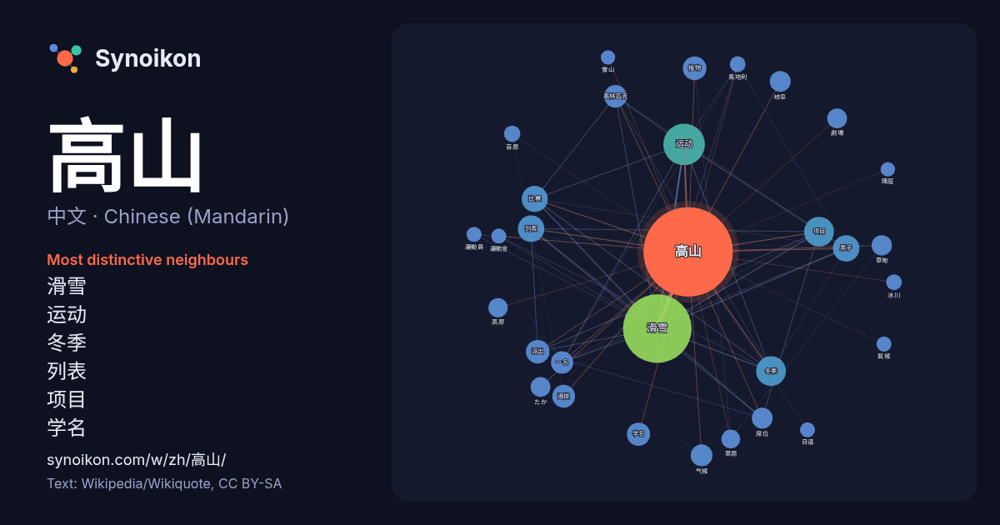

中文 · Chinese (Mandarin) · word of the day list
高山
“mountain” · The words found around it in 1040 instances from Chinese (Mandarin) Wikipedia, Wikiquote.

Most distinctive neighbours
- 滑雪 190×
- 运动 44×
- 冬季 36×
- 列表 29×
- 项目 27×
- 学名 25×
- 奥林匹克 25×
- 男子 24×
- 派出 23×
- 岐阜 21×
- 气候 21×
- 比赛 20×
- 草甸 20×
- たか 20×
- 植物 19×
- 席位 18×
- 高原 17×
- 劇場 17×
- 草原 16×
- 苔原 14×
× = how many times more often than in general Chinese (Mandarin) Wikipedia text.
Most frequent neighbours
- 滑雪 228
- 运动 84
- 冬季 43
- 项目 43
- 列表 34
- 男子 34
- 比赛 33
- 日本 29
- 植物 27
- 派出 27
- 学名 26
- 奥林匹克 25
- 海拔 25
- 一名 24
- 世界 24
- 台灣 24
- 气候 23
- 岐阜 21
- 席位 21
- 获得 21
In context
- 高山可以指： 高度较高的山，參看山 高山市，日本岐阜縣北部，舊飛驒國中心部 高山縣 (消歧義)，若干個以高山为名的县 高山镇，若干個以高山为名的镇 高山乡，若干個以高山为名的乡 高山村，若干個以高山为名的村 高山 (巡視台灣監察御史) 王冶秋，化名高山 高山 (中国银行)（1965年－），中国银行工作人员，现已被判刑 Wikipedia snippets · 高山
- 高山症之作用機轉並不清楚，目前並無證據顯示本藥是否能幫助身體加速適應高山環境，且使用本藥後如一旦停止服用，很可能會有高山症反彈現象，而加速出現高山症，故使用本藥要小心。 人們一旦登上3,000公尺（10,000英尺）高山，即有百分之二的人有可能出現高山肺水腫。它可以急速惡化致死，高山 Wikipedia snippets · 高山症
- 莊川櫻（莊川） 國指定天然記念物「臥龍櫻」（宮） 縣立自然公園 宇津江四十八瀧（國府） 高山陣屋（高山） 飛驒國分寺（高山） 照蓮寺（高山別院・城山公園）（高山） 日枝神社（高山） 櫻山八幡宮（高山） 飛驒總社（高山） 飛驒天滿宮（高山） 國府大佛（國府） 荒城神社（國府） 阿多由太神社（國府） 千光寺（丹生川） Wikipedia snippets · 高山市
- 如何区分擁有多個山峰的高山與单独的高山一直是个难题。一種較常見而且直观的判断方法是利用最高鞍狀山脊與毗鄰較高山峰的高度差距，这一方法被稱為地形突起（topographic prominence）或re-ascent（較高的山峰稱為“母峰”）。高山的通用定義是突起地形超過300米（或1 Wikipedia snippets · 世界高山列表
- 邑主教國，位于比利牛斯山脉东南部，毗邻法国和西班牙。首都為安道尔城。官方语言为加泰罗尼亚语，通用语言为西班牙语和法语。国内居民多信奉天主教。 安道尔高山峡谷遍布全境，全国平均海拔高达1,100米（3,600英尺），是欧洲地势最高的国家。 安道尔宪法规定，安道尔为君主立宪制国家，首相为政府首脑。安道尔 Wikipedia snippets · 安道尔
- 2007年亞洲冬季運動會的高山滑雪賽事為期兩天，由2007年1月31日展開並隨男子小項決賽後於北大湖滑雪場結束，當中會頒發兩面金牌。 * 主办国家/地区（中国） Wikipedia snippets · 2007年亞洲冬季運動會高山滑雪比賽
- 2005年老挝政府出版的《老挝人民民主共和国各族群》中记录，老挝共有49个民族 ，通常又按居住地区分类，分为低地的老龙、丘陵的老听和高山的老松三大民族集团。老龙族通用寮语，而老听族和老松族则使用藏缅语、孟-高棉语和苗语等其他语言。传统上，上座部佛教是该国主流的宗教信仰。 Wikipedia snippets · 老挝
- 高山」（日語：新高山／にいたかやま，羅馬化：Niitakayama），7月6日由拓殖務省發布告示第6號公布。，意指日本領土新的最高峰，周圍群峰一併更名，主峰又稱「新高主山」，也稱作「嘉義新高」。稍後，1923年時亦將雪山命名為「次高山」，意指第二高峰。當時的新高山與次高山（雪山）、能高山並稱「台灣三高」。 Wikipedia snippets · 玉山
More Chinese (Mandarin) words
Precomputed on 2026-10-09 with default settings (±5 words, medium corpus). The interactive map can refresh it with live data.